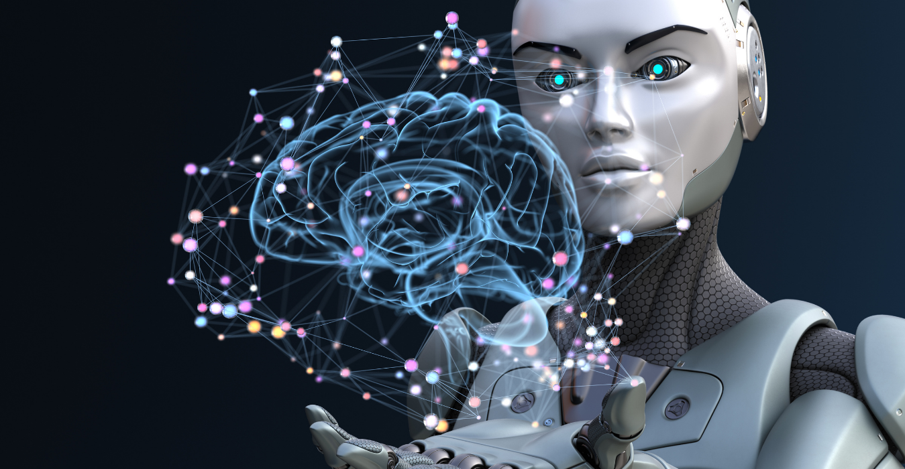
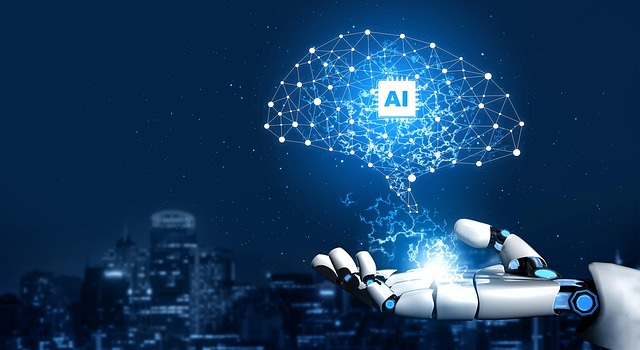

La Inteligencia Artificial ofrece múltiples ventajas que ayudan al desarrollo tecnológico y social.
Una de sus principales ventajas es la automatización de tareas, ya que puede realizar trabajos repetitivos de manera rápida y eficiente. Esto permite ahorrar tiempo y aumentar la productividad en empresas y organizaciones.
Otra ventaja importante es su capacidad para analizar grandes cantidades de datos en poco tiempo. Esto ayuda a tomar decisiones más informadas en áreas como la medicina, la economía, la educación y la investigación científica.
La IA también mejora muchos servicios digitales. Por ejemplo, los sistemas de recomendación en plataformas de música, videos o compras en línea utilizan inteligencia artificial para sugerir contenidos que puedan interesar a los usuarios.
En el área de la salud, la IA puede apoyar a los médicos en el diagnóstico de enfermedades, analizar imágenes médicas y ayudar a desarrollar nuevos tratamientos.
Las ventajas de la inteligencia artificial representan todos los beneficios y aportes positivos que esta tecnología ofrece a la sociedad, la economía, la industria y l.jpg) a vida cotidiana. Una “ventaja” se define como una condición favorable que permite mejorar un proceso, obtener mejores resultados o facilitar una actividad.
a vida cotidiana. Una “ventaja” se define como una condición favorable que permite mejorar un proceso, obtener mejores resultados o facilitar una actividad.
Una de las ventajas más importantes es el aumento de la eficiencia. La eficiencia es la capacidad de realizar una tarea utilizando menos tiempo, esfuerzo o recursos. La IA permite automatizar procesos que antes requerían intervención humana, lo que reduce el tiempo de ejecución y aumenta la productividad. Por ejemplo, en una empresa, la IA puede procesar miles de datos en segundos, mientras que un humano tardaría horas o días.
Otra ventaja clave es la reducción de errores humanos. Las personas pueden cometer errores debido al cansancio, distracción o falta de experiencia. En cambio, los sistemas de IA, cuando están correctamente diseñados, pueden realizar tareas con gran precisión. Esto es especialmente importante en áreas como la medicina, donde un error puede tener consecuencias graves.
La automatización es otro beneficio fundamental. La automatización consiste en el uso de máquinas o sistemas para realizar tareas sin intervención humana.
Esto permite que las personas se enfoquen en actividades más complejas, creativas o estratégicas. Por ejemplo,

en una fábrica, los robots pueden encargarse de tareas repetitivas, mientras que los humanos supervisan el proceso.Otra ventaja importante es la capacidad de análisis de grandes volúmenes de datos. En la actualidad, se generan enormes cantidades de información, y la IA permite procesarla de manera rápida y eficiente. Esto facilita la toma de decisiones informadas en áreas como negocios, ciencia y tecnología.
La disponibilidad continua es otra gran ventaja. A diferencia de los humanos, la IA puede trabajar las 24 horas del día sin descanso. Esto es útil en servicios como atención al cliente, monitoreo de sistemas y procesos industriales.
La inteligencia artificial también mejora la toma de decisiones. Al analizar datos y patrones, puede ofrecer recomendaciones más precisas y reducir la incertidumbre.
Además, la IA impulsa la innovación tecnológica. Gracias a ella, se han desarrollado nuevas herramientas, aplicaciones y sistemas que mejoran la calidad de vida.
Otra ventaja es la personalización. La IA permite adaptar servicios y productos a las necesidades de cada usuario, como recomendaciones en plataformas digitales.
También mejora la seguridad, ya que puede detectar fraudes, amenazas y comportamientos sospechosos en tiempo real.
La IA también permite resolver problemas complejos que serían difíciles o imposibles para los humanos, como el análisis de grandes sistemas o la predicción de eventos.
Finalmente, la IA contribuye al desarrollo

científico, permitiendo avances en áreas como la medicina, la ingeniería y la investigación.Además, existe el riesgo de uso indebido de la inteligencia artificial. Esto significa que puede ser utilizada con fines negativos, como la manipulación de información, la creación de noticias falsas, la vigilancia excesiva o actividades ilegales. Por ejemplo, la IA puede utilizarse para crear contenido falso que parezca real, lo que puede confundir a las personas.
Otra desventaja importante es la falta de transparencia. Muchos sistemas de IA funcionan como “cajas negras”, lo que significa que no es fácil entender cómo toman decisiones. Esto dificulta detectar errores, corregir problemas o confiar en los resultados.
También existe el riesgo de fallos en sistemas críticos. Un sistema crítico es aquel que tiene un impacto importante en la vida de las personas, como en la salud, el transporte o la seguridad. Si la IA falla en estos casos, las consecuencias pueden ser graves, incluso peligrosas.
La falta de control humano es otro problema relevante. A medida que los sistemas de IA se vuelven más complejos, puede ser difícil supervisarlos completamente. Esto puede generar situaciones en las que las decisiones no estén completamente bajo control humano.
Otra desventaja es la reducción de habilidades humanas. A medida que las personas dependen más de la IA, pueden dejar de desarrollar ciertas habilidades, como el pensamiento crítico, la memoria o la resolución de problemas..jpg)
También se debe considerar el impacto ambiental. Los sistemas de IA requieren grandes cantidades de energía para funcionar, especialmente en centros de datos. Esto puede contribuir al consumo energético y al impacto ambiental.
Además, la IA puede aumentar la desigualdad. No todas las personas o países tienen acceso a esta tecnología, lo que puede generar una brecha digital entre quienes tienen acceso y quienes no.
Otra desventaja es la dificultad para regular la tecnología. La IA avanza muy rápido, lo que hace que las leyes y normas no siempre estén actualizadas para controlarla.
También existe el riesgo de pérdida de control en sistemas avanzados. A medida que la IA se vuelve más compleja, puede ser más difícil entender o controlar completamente su comportamiento.
Finalmente, la inteligencia artificial carece de emociones, valores y ética humana. Aunque puede simular comporta.jpg) mientos, no tiene conciencia ni empatía, lo que puede ser un problema en situaciones que requieren comprensión humana.
mientos, no tiene conciencia ni empatía, lo que puede ser un problema en situaciones que requieren comprensión humana.
DESVENTAJAS DE LA INTELIGENCIA ARTIFICIAL
Tras el análisis de la parte positiva de la IA es obligatorio repetir el estudio con sus aspectos más problemáticos. La incertidumbre, la necesidad de contar con especialistas y el coste de su puesta en práctica son tres buenos ejemplos que completamos con los siguientes.
1. La vulneración de derechos
Los derechos de imagen, la privacidad de los datos utilizados y la posible vulneración de las leyes en vigor exigen una formación específica para evitar posibles sanciones. De hecho, los países miembros de la UE han acordado debatir los detalles de una ley de IA. Hasta su aprobación, será la LOPD la que vele por la privacidad de los datos compartidos durante el uso de la herramienta.
.jpg)
2. La dificultad de acceso a los datos
Ningún sistema de inteligencia artificial será eficaz si sus datos no están actualizados y tampoco si no son fiables. Desgraciadamente, no siempre es así y el programa va desarrollando su labor sobre una base de datos errónea que termina por provocar errores sustanciales en el futuro de la empresa.
3. La falta de profesionales cualificados
Cada vez hay más profesionales formándose en la materia, pero la tecnología crece a un ritmo más rápido. Esta paradoja implica que no se pueda implementar la IA por no haber técnicos que puedan desarrollarla en su totalidad..jpg)
4. El coste de su desarrollo
Aunque haya alternativas gratuitas de uso doméstico, el precio de los planes para profesionales podría ser prohibitivo. Si se trata de un sistema personalizado para una empresa concreta el coste se dispara y solo las grandes compañías pueden permitirse una inversión así.
5. Pérdida de empleos
Automatizar las distintas tareas termina provocando que se eliminen varios puestos de trabajo como operarios de fábricas, redactores o similares.
6. La dependencia de la tecnología
Basar toda la actividad de una empresa en la IA puede parecer positivo, pero en caso de error el futuro del negocio se vería seriamente afectado.
7. Falta de empatía y de ética
Cualquier decisión que toma la IA se va a caracterizar por no tener ningún tipo de empatía y por no ser creativa. Todo es una consecuencia del análisis de los datos obtenidos y habría casos en los que las acciones elegidas no serían ni éticas, ni recomendables.
8. La posibilidad de su uso con fines maliciosos
Al no poder distinguir entre un dato positivo y uno negativo, la IA también ayudará a quienes la utilicen para sustraer datos ajenos o crear armas totalmente autónomas por citar dos ejemplos del posible daño que podría provocar un mal uso de este tipo de inteligencia.
9. La falta de personalización
Cualquier cliente quiere sentirse especial al ser atendido por una empresa. Lo mismo sucede al leer un texto en un sitio web de su interés. El uso generalizado de la IA provocar.jpg) ía que un alto porcentaje de las empresas ofrezcan prácticamente lo mismo evitando así las ventajas de la diferenciación.
ía que un alto porcentaje de las empresas ofrezcan prácticamente lo mismo evitando así las ventajas de la diferenciación.
| menú | siguiente | inicio |